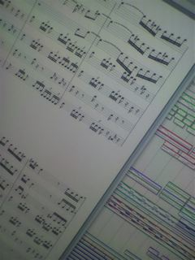
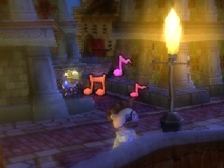
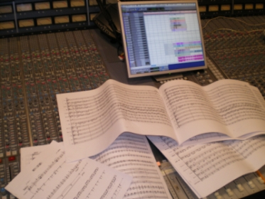

家に帰ってなにげなくテレビのスイッチを入れると
九州のほうでは信じられない大雨、関東北部では竜巻
なにやら空のご機嫌がナナメでちょっと怖い今日この頃。
お天道さまにはさからえないなぁ、なんて感じつつも
みんな負けないで！俺も負けないぞ！
と奮い立つのが、あるべき心の持ちようなのだろうと思うのです。
というわけで、ひさかたぶりのワーダです。
生きてます。元気いっぱいです。
最近は「ゲームは一日一時間！」と何故か必死につぶやきつつ
日本全国約300万人以上の人たちと一緒にすれ違いを楽しんでます。
ちょっとずつ増えてくこととか、ものすごく多くの人が
今この瞬間に同じことを楽しんでるんだとか、
そんな事がうれしいです。やっぱ偉大だなぁと。
さて、そんな元気いっぱいのワーダですが、先週末に
とある大阪の専門学校に講義のゲストとして参加してきました。
ここ→ http://www.oca.ac.jp
将来ゲーム業界をしょって立つであろうゲームクリエイターの
卵たるみなさまに、王様物語を例に挙げてゲーム制作の流れ
について話をさせていただきました。

この講義、本当は我らが皆葉センセーとキムＰが行って、
第一線で活躍するクリエイターとして、
すごくためになるお話をするはずだったんです。
ところが、ちょうど同じタイミングで
はるか遠くヨーロッパはスペインで欧州任天堂が
ヤングデベロッパーズカンファレンスなるものを開催するとのこと。
ほっかほかで出来たてのパエリアに惹かれたのか、
ヤングでゴージャスな地中海のおねーチャンにつられたのか
真実は定かでありませんが、とにかく急遽キムＰは旅立つこととなり、
ＥＰといういかにも仕事のなさそうな私にお声がかかったわけです。
こういう講演をすることはたまにあるのですが、
限られた時間の中、講演の主旨とかもあるのでだいたいの場合は
なかなか踏み込んだ話をすることが出来ません。
そこで今回考えたのが、私のパートでは「とにかく映像を見てもらおう！」
というものでした。もともとの予定にも最新の”まるわかりＰＶ”を
みてもらうことは入っていたのですが、それに加えて初公開時の
トレーラーと、なんとプロトタイプのトレーラーを持っていきました。
王様物語は結果として開発にすごく時間がかかってしまったので、
当然ながらスッと目に入ってくるゲーム画面も時系列に沿って
相当な進化を遂げています。それはゲームがだんだん出来て行く流れを
説明をするにはうってつけでした。
この学校の生徒さんたちは比較的デザイナーさんが多いということで
皆葉センセーのデザイン的にテクニカルな話はみんな一生懸命聞いて
くれます。ところが、私の方はプロデュースというどうにも概念的で
抽象的な話。しかもこのプロジェクトではキムＰみたいに現場で
辣腕をふるっていないので、ちゃんと理解してもらえるか不安も
ありましたが、やっぱり映像の力はすごいですね。
プロトタイプの映像では最初にでかでかと今と違うタイトルが
出るんですが、この瞬間もう教室がドカーッ！という感じで
盛り上がり、いろんな意味で不安が吹き飛びました。
このゲームはやはり本質的に人を楽しませる力を持っています。
生徒さんたちのキラキラしたたくさんの瞳を直に見ることができて
あらためてそれを確信することが出来ました。
発売まであと１ヶ月ちょっと。まだまだ出来る事はあるはず。
少しでも多くの人に遊んでもらうため、ニコニコしてもらうため。
がんばるぞー！おーっ！
「王様物語」blogをご覧に皆さま、こんにちは。
今回、少しだけお手伝いしましたヘッポコ音楽家の下村陽子です。
こここ、こんなblogにまでしゃしゃり出てきていいのでしょうか…？？
あれはいつの日だったか、昔の同僚である、皆葉くんや倉ちゃんに、トートツに、
「しょーちゃん（＝きむＰさん）家で焼肉食べよう」
と、誘われました。
あぁ、あの焼肉パーティーが、このお手伝いに結びついてしまったわけですよ。
焼肉たらふく食べて、ほろ酔いでいい気分＆昔話で弾んで、
そこへ「ちょっと手伝ってーな」なんて言われると、
「あ？うん？？手伝う、手伝う」なんて、軽く答えちゃうでしょ（笑）。
みんな策士だな。いや、単に私が食い気とビールに負けたのか。
そんな訳で、お手伝いさせて頂いたのですが、
きむＰさんのリクエストは、
「ラヴェルのボレロとか、歌でやりたいねん。」
…また、無茶を言うこの人は。
「でな、TGSで発表したいねん。」
…………。（TGSまで、あとどんだけあると思ってんねん。）
えぇ、やりますよ！やりますとも！！やってみせますとも！！！
焼肉ご馳走になったしな！ビールもたくさん呑んだしなっ！！
そして、最初のPV曲となりました、
ラヴェルの「ボレロ」Vocal Ver.が生まれました。
この曲で、可愛らしいVocalを披露して頂いているのは、
「うちやえゆか」さんです。
→うちやえ ゆか ( Uchiyae Yuka ) OFFICIAL SITE
うちやえゆかさんは、皆さんも必ず一度は耳にされていると思う、
あの有名な引越会社のCMや、『ふたりはプリキュア スプラッシュ☆スター』
（ABC・テレビ朝日系列）でオープニングテーマソングを担当されている、
とっても素敵な歌声の方です。
今回のボレロでは、通常のVocal曲と違い、声を楽器のように演出したい、
と思い、Vocalパートを何度も何度も重ねて録音しました。
もう時間が経ってしまったので、正確な回数は思い出せないのですが、
うちやえゆかさんに歌って頂いたトラックが全部で7トラック、
そのどれもが、ダブルやトリプルで重ねているので、お一人で、
20トラックぐらい歌って頂いたと思います。
そして、うちやえゆかさんのVocalパートとは別に、コーラスパートもあるんです。
レコーディングは声まみれでした（笑）
何の画像もないのも寂しいので、 
久々にデータを立ち上げてモニターを携帯でパチリ。
左側にちょっと写っている楽譜が、うちやえさんの歌われているトラックです。
今回私が担当したこのボレロ以外にも、とても素敵なクラシック曲の
アレンジが散りばめられています。
すでに公開済みの「ハバネラ」や「ラ・カンパネラ」も、
とてもとても素敵な曲だな～と思って聴きました。他の曲も楽しみです。
クラシック音楽のこういうアプローチって、面白いですよね！
そして、PV楽曲だったこのボレロ、実際にゲームの中にも収録されています。
是非是非みなさん、この楽しい「王様物語」をプレイして頂けると嬉しいです～！
こんにちは、始めまして。
サウンドの佐野ともうします。
文才もなければ、ユーモアセンスもないので、
あんまりたいした文章書けませんけど、
お時間のある方は、どうぞおつきあいくださいませ。
今回の私の任務は、効果音の制作ならびに、
サウンドスタッフの制作した効果音の素材を管理することでした。
スタッフから受け取った素材を、一つ一つ確認してまとめていくのですが、
あまりにもステキ素材や、オモシロ素材がありますと、
つい聴き入ってしまいます。
特に「ヘンナノ」の効果音は、何度も繰り返し聴いて、
一人ニタニタしてしまうくらい、オモシロイのがあります。
かわいかったり、笑えたり、飽きないやつらです。
あ、そういえば、もう一つ大事な任務がありました。
「ハナウタシンガー」！
私、おんちなんですが、がんばりましたよ。
ハナウタ候補曲としてあがっていたリストは、
耳慣れたクラシックの名曲ばかりだったので、
大学生の時分、合唱団でアルトを歌っていたことを思い出しつつ、
楽しくやらせていただきました。
…と言いたいところですが、ちょっとおなかの痛くなる出来事が…
大好きな曲のメロディーを、合唱団ばりに歌っていましたら、
何せ、ハナウタ。何しろハナウタです。
面白オカシイことを、要求されるのです。
「○×▽∴～ｄｓｄｃヴぉういｆ、って歌って」
「・・・・！！！？▲★な感じでよろしく」
私は笑いの沸点がとても高いんですが、（つまり、なかなか笑えない）
そのハナウタの（安達ディレクターによる）ディレクションは、
笑いツボに、ピンポイントにはまってしまったのでした！
ああ～笑いすぎておなかが痛くて、レコーディング続行不能！
こうなってしまうと、幾つになっても、ハシが転んでもオカシイものです。
ヒリヒリとした腹筋痛と、普段動かさない顔の筋肉の痛みを残しつつ、
なんとか終えることが出来ました。
もちろん、ハナウタは私だけではなく、プロの方、アマの方もとりまぜて、
バラエティ豊かな歌が揃っています。
笑い転げるぐらいオモシロイ歌！ぜひ楽しんでくださいね。

（※♪のマークはハナウタの目印！フフ・・・全部集められるかな？）そんなこんなで、楽しい？開発でしたが、
ラストに近くなれば近くなるほど、欲って出てくるものです。
あそこにも音を入れたい、ここにも入れたい、
でももう期間がない！でも作っちゃうもん！
ああッ、容量がもういっぱいですよ～。素材を短く切り分けてください！
そんなことが、何度もくりひろげられました。
池田さん、御姓さんをはじめとした、企画・プログラマーのみなさんには、
今回、東京⇔福岡と離れていたにもかかわらず、
私のしつこい電話質問攻撃に答えていただいたり、
音の相談に乗っていただいたりして、
まったく物理的距離を感じさせませんでした。
大変感謝しております。
少しずつ、音が出そろってきて、あらためてプレイした時は、
やっぱりなんとも嬉しかったです。
開発期間は長くいただきましたが、
スタッフのこだわりがギュッとつまった逸品です。
みなさん、ぜひ王様物語を楽しんでくださいね！！
みなさま、はじめまして。
音楽を担当した蓑部 雄崇（みのべ ゆたか）です。
木村氏とは前に何だかこわーいゲームをやって以来、
また6、7年ぶりに一緒に仕事をさせていただきました。
あいかわらず分けわかんなくて面白いことを考える人です。
さてさて、「王様物語」の音楽についてですが、
木村氏からは、「クラシックの有名な曲のアレンジ」
「なんかバ○ボンの音楽みたいなかんじ」という注文でした。
木村氏からの注文をうけて、最初に思ったのが、
「クラシックって実は身近な存在なんですよー」みたいな、
普段あまりそういうのを聞かない人が興味を持ってくれるように、
ほれほれ、ポップな感じにしたぞ、みたいなのって、
観光地で売ってる「何とかサブレ」みたいで、なんだかなーと思ってました。
そこで僕の中で得た結論としては、
あくまでゲームのBGMだから、考えてみれば、演奏会とかライブとかと違って
音楽が完全に主役、というわけでもないのが逆にいいかもしれないと思い、
とにかくゲーム全体の雰囲気に合ったように
なるたけBGMとして自然な形で、わざとらしくなく編曲する、ということでした。
結局ゲームに合わせて音楽をアレンジする、という、ごく当たり前のことなんですが、
何せ、ベートーベンだのモーツァルトだの、チャイコフスキーだのによって、
すごいキャラの強い古典的メロディーラインが、どーんとあって、
歴史に残る譜面で既にすばらしく完成されてる楽曲を、あえてデリダじゃないけど
「脱構築」するんですから、むしろ自分で作曲するよりずっと苦労しました。
しかしえらい苦労したわりに、なんかホンワカしてる音楽なんで、何だか複雑です。
いや、ホンワカさせようとしてそうなったのだから、これでいいのか。うん。

（※ナチュラルに散らかる楽譜がチョーカッチョイイ！）
でも、ちょっと主張したいのは、少なくとも僕の担当した部分は、
すべてがすべて、短いのも長いのも、クラシック曲のアレンジになっていることです。
なので、今かかっているのはクラシックのなんていう曲のアレンジなんだろうと
探ってみながら遊べるのも、王様物語のひとつの楽しみ方かもしれません。
それでは。みなさんもぜひ「王様物語」を実際に遊んでみて、
あー、なんか聞いたことあるけどこれなんだっけ、という
何とももどかしい感じを味わってください。
それでは。
ついに衆院は解散。総選挙が刻一刻と迫る昨今、
皆様におかれましてはいかがお過ごしでしょうか。
きむＰ影武者兼ＰＲ大臣筆頭補助心得、池田トムです。
プログラマー、ムービー、グラフィックと
続きましたので、今週はサウンド担当のご紹介。
デルファイサウンドの蓑部さん
現在はフリーでご活躍の下村陽子さん
バンプールの安達さん、佐野さん
以上の華麗なる皆々様です。
さてさて、このブログをごらんの皆様はもちろん、
最新のＰＶはごらんになりましたよね？
このビデオのバックにも、リストの『ラ・カンパネラ』が
優雅に流れている通り、王様物語はその王様たる華麗なる
日々を演出した最高のＢＧＭ、舞台を彩る素敵なＳＥにも
存分に力を注ぎまくりました。
小さい王国から、大きな王国へ。
平和な草原から、恐ろしい土地へ。
その、華麗なるサウンドの変化をお楽しみ下さい。
それでは、私が口ずさむラ・カンパネラを聞きながら、
今週のゲストの皆様を楽しみにおまち下さい♪
ホゲホゲホゲ ホゲホゲホゲ ホゲホゲホゲ ホゲホゲホゲ
ホゲホゲホゲ ホゲホゲホゲ ホゲホゲホゲ ホゲホゲホ
ホゲホゲホゲ ホゲホゲホゲ ホゲホゲホゲ ホゲホゲホゲ
ホゲホゲホゲ ホゲホゲホッ ホゲホゲホッ ホッ♪（※繰返）


 クリエイターズBLOG トップ
クリエイターズBLOG トップ